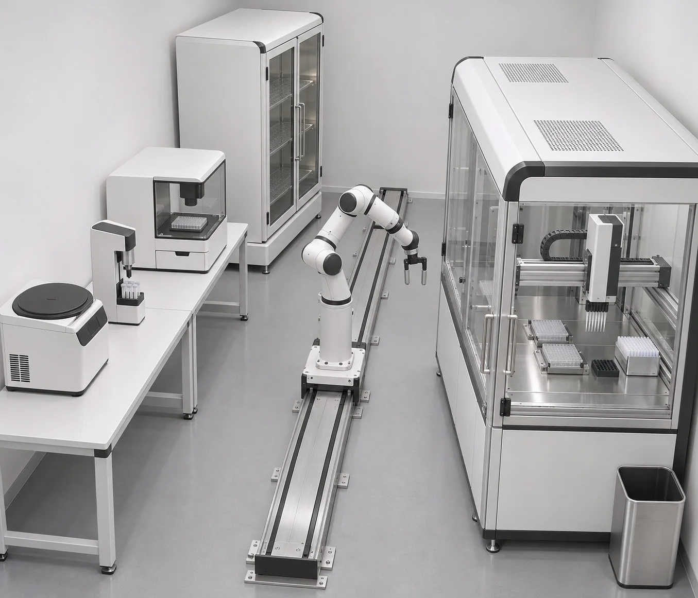
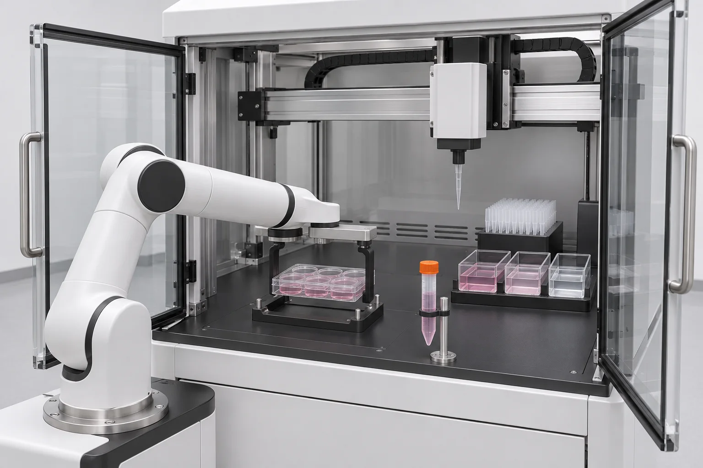
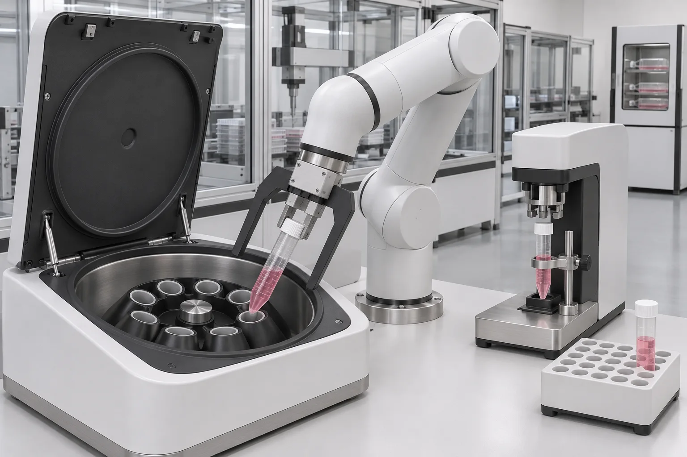
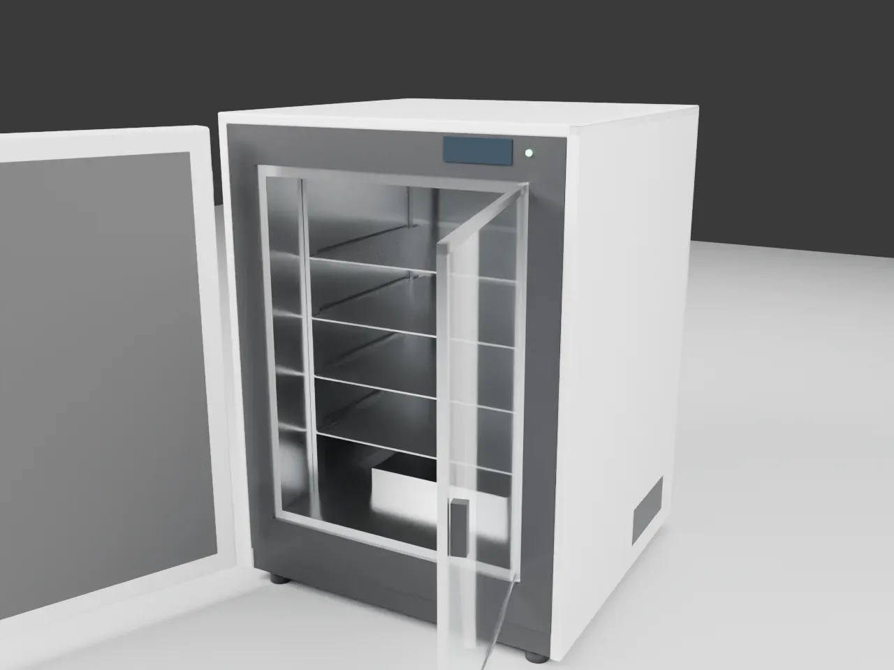
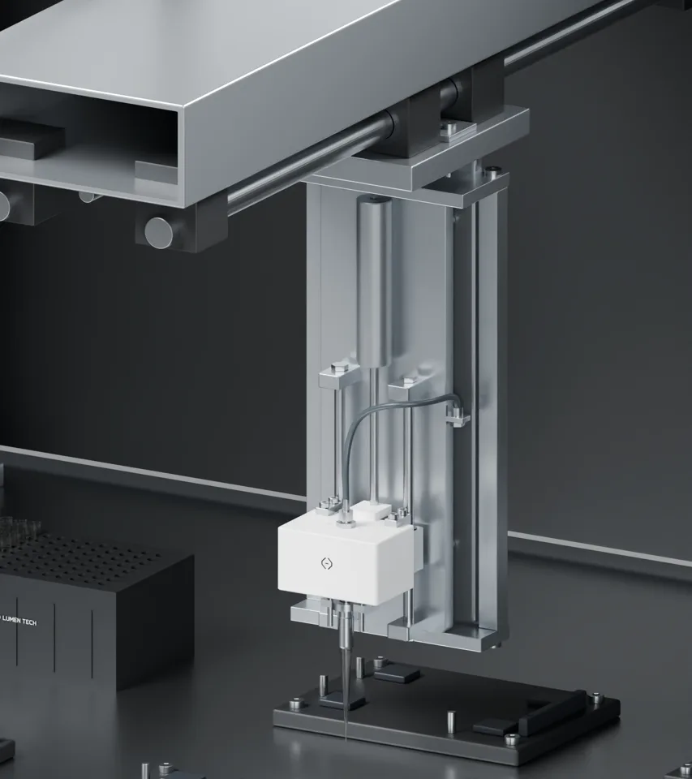
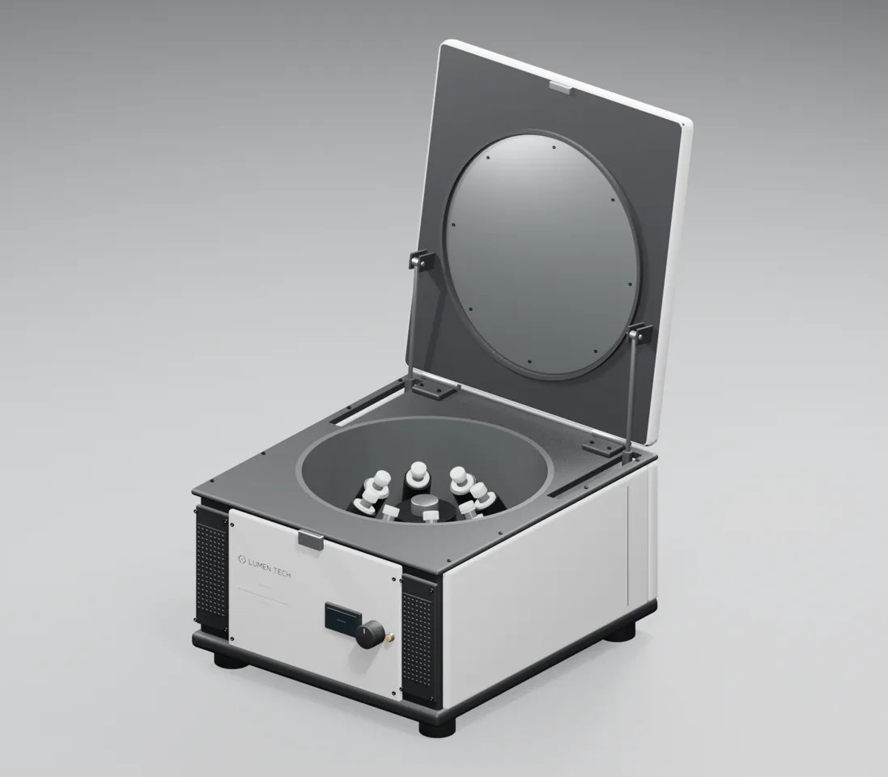
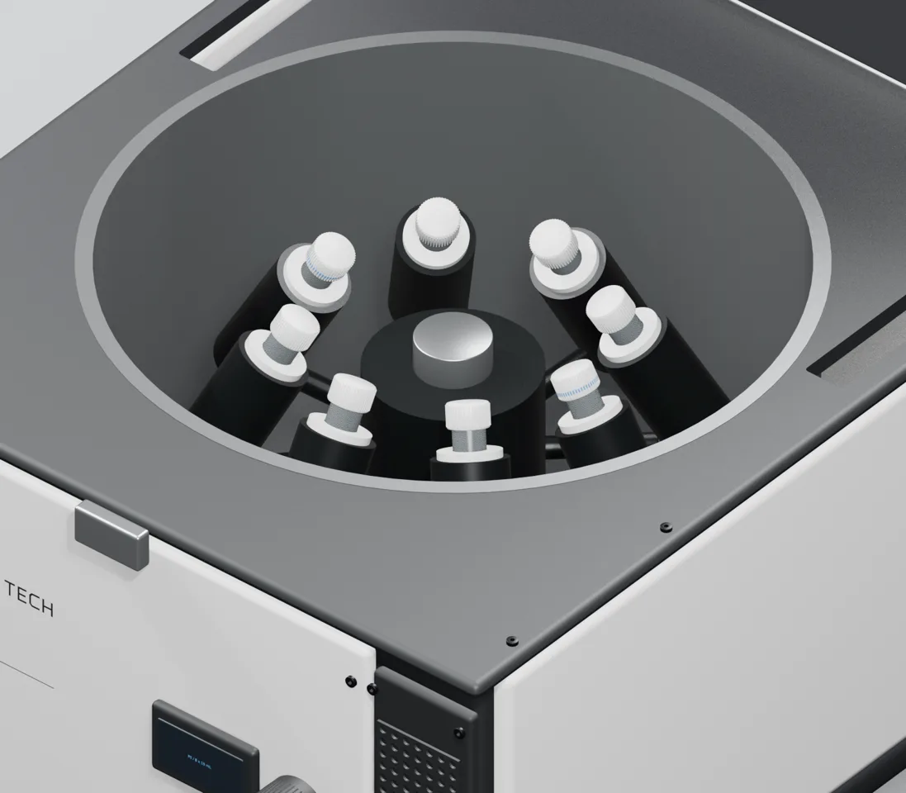

细胞传代黑灯实验室：全流程方案
一台 Panda 沿 2.95 m 导轨，在 5 个区域之间完成一次贴壁细胞传代的全部机械动作。布局已经过运动学预演：57 项检查全部通过。
01目标与不做什么
场景、流程、资产三张清单已在范围预览中确认（D1–D4）；这里给出可执行的方案。
目标
用真实机械物理（MuJoCo）走通 14 步传代流程：母板出箱 → 观察 → 工作站内去旧液、清洗、解离、收集 → 开盖器 → 离心 → 重悬 → 计数 → 接种子板 → 子板回培养箱 → 废物收尾。按 4 期实现，每期一段成片，最后一段完整成片（draft 档位，不加速、不剪辑）。
不做什么
- 液体与细胞状态模型（只记动作日志、画静态液面）
- 6 孔独立样本、Web 控制、Newton
- 机械臂旋盖、机械臂拿移液枪
- 强度、制造、真实硬件验证
- 布局：导轨沿 x 轴，南侧依次是离心台、观察站、培养箱，北侧是移液工作站和固体废物箱，各设备正面朝向导轨。培养箱放在导轨末端，铰链朝外，外门往导轨外侧开；箱体垫高 0.12 m，让门下沿高过导轨梁。这一条解决了预演 v1 里外门扫过导轨的问题。
- 夹管不换指：原装指尖夹管（0–80 mm），偏置指垫夹板（110–190 mm）。前提是夹管处周围 ±70 mm 内没有宽于 ±50 mm 的结构，所以开盖器、管座都做成细柱（预演 v1 → v2）。
- 离心机转子分度：要装的孔先转到后方，管子沿 30° 孔轴从前上方插入。另外 6 个孔合并为静态几何，以减少碰撞体。
- 工作站 Z 轴加长到 +0.16 m（资产另存 v03）：原行程只有 75 mm，吸头越不过 15 mL 管的管口，也伸不到管底。
- 板和盖的流转：母板盖直接丢进废物箱；子板预先放在培养箱 4 层，接种时它的盖暂放在 C 位；计数板不带盖。这样前排 3 个板位就够用，后排留给吸头架、储液槽和废液槽。
- 机器人路线：按工艺顺序走过 12 个取放位姿和 9 个门口过渡点，共 27 段过渡。这条路线也是仿真阶段的动作序列。
02效果图
AI 概念图（gpt-image-2.5-flare），只用来对齐风格。和设计不一致的地方以第 03、04 节为准。



03布局与运动学预演
俯视图由 analysis/layout.py 生成，和预演输入是同一份数据。实线框是设备代理，虚线是门、抽屉、离心机盖的扫掠件，绿点是通过预演的取放位姿。
| 取放位姿 | 结果 | 无碰撞构型数 | 导轨位置 x (m) |
|---|---|---|---|
park | PASS | 6 | 1.54 |
incubator_shelf3 | PASS | 3 | 2.60 |
imager_drawer | PASS | 6 | 1.03 |
ws_A_plate | PASS | 6 | 1.54 |
ws_A_lid | PASS | 6 | 1.54 |
waste_drop | PASS | 6 | 0.59 |
decapper_tube | PASS | 6 | 1.39 |
ws_B_tube | PASS | 4 | 1.44 |
centrifuge_pocket | PASS | 6 | 0.17 |
side_rack_tube | PASS | 6 | 0.34 |
ws_C_plate | PASS | 3 | 2.05 |
incubator_shelf4 | PASS | 3 | 2.51 |
预演迭代
| 版本 | 失败 / 总数 | 主要改动 |
|---|---|---|
| v1 | 11 / 33 | — |
| v2 | 10 / 33 | 培养箱挪到导轨末端；开盖器和管座改成细柱；水平侧夹管；停靠位挪到南侧 |
| v3 | 0 / 57 | 离心台挪近；培养箱垫高 0.12 m；加门口过渡点；按工艺顺序生成完整路线 |
预演只说明运动学可行：所有位姿可达、无碰撞，活动件扫掠不撞，过渡段能走通。搬运时盖不滑、接触穿透等问题由仿真阶段验证。完整记录见 analysis/preflight_log.md。
04设备与资产
资产审查见 analysis/asset_audit.md：缺失的网格按 SHA 从 1104 归档补齐（离心机 165 个、工作站 32 个），再用 MuJoCo 3.17 编译，读出关节和执行器。
| 设备 | 来源 | 状态 | 难度 | 说明 / 许可 | |
|---|---|---|---|---|---|
 | 培养箱 薄切片 01 | 复用 | PASS | L3 | 外门 + 内玻璃门（执行器），4 层隔板；新增 0.12 m 底座 Lumen 原创（本项目） |
 | 观察站（兼计数） plate_imager_p0 | 复用 | PASS | L3 | 抽屉 0–190 mm；观察、计数结果只作标注 Lumen 原创（本项目） |
| Panda + 偏置宽指 Menagerie 98a70c5 + 薄切片 01 | 复用 | PASS | L3 | 偏置指垫夹板（110–190 mm），原装指尖夹管（0–80 mm） Apache-2.0 + Lumen 原创 | |
| 线性导轨 + 滑台立柱 — | 新建 | NOT_RUN | L2 | 行程 2.95 m，基座高 0.60 m，滑台执行器驱动 Lumen 原创（本项目） | |
 | 移液工作站 v03 workstation_lumen_v02 | 修复后复用 | NOT_RUN | L3 | 补执行器、放开重力、Z 轴加长到 +0.16 m；兼当洁净操作区（D3） Lumen 原创（本项目） |
 | 吸头装卸 workstation_lumen_v02（吸头、喷嘴来自 pipette v03） | 修复后复用 | IDEALIZED | L4 | 源资产标 BLOCKED；对准后用约束挂上（理想化） Lumen 原创（本项目） |
 | 离心机 v04 centrifuge_lumen_v03_engineering | 修复后复用 | NOT_RUN | L4 | 盖、转子带执行器；转子分度；精简为 2 个装载孔 Lumen 原创（本项目） |
 | 离心管、配平管 离心机 v03 原创 15 mL 级管 | 几何复用 | IDEALIZED | L4 | Ø22.2 × 122.8 mm；管盖独立刚体；小件夹持用约束（理想化） Lumen 原创（本项目） |
| 开盖器 — | 新建 | NOT_RUN | L4 | 细柱管座 + 后方夹爪 + 旋盖头；管盖对准后用约束（理想化） Lumen 原创（本项目） | |
| 管座、配平管架 — | 新建 | NOT_RUN | L2 | 细柱，周围 ±70 mm 内没有宽于 ±50 mm 的结构 Lumen 原创（本项目） | |
| 储液槽 ×3、废液槽 — | 新建 | NOT_RUN | L1 | SBS 尺寸，放在工作站后排；只有静态液面 Lumen 原创（本项目） | |
 | 废吸头盒 waste_tip_station_lumen_v01 | 复用 | NOT_RUN | L2 | 台面开孔下沉安装（1104 R05 方案） Lumen 原创（本项目） |
| 固体废物箱 — | 新建 | NOT_RUN | L1 | 0.40 × 0.30 × 0.55 m，开口朝上 Lumen 原创（本项目） | |
| 房间、陈设 — | 新建 | NOT_RUN | L1 | 冰箱、试剂柜只做视觉 Lumen 原创（本项目） |
05工艺步骤
合并样本：母板、子板、计数板各 1 块，离心管 1 支加配平管 1 支，离心 1 次。保真度：物理＝真实接触与支撑；理想化＝机械动作是物理的，但小件夹持用约束、液体只记日志；符号化＝只有等待和标注。
| # | 工艺步骤 | 执行者 | 难度 | 保真度 |
|---|---|---|---|---|
| 1 | 培养箱开门，取出母板，关门 | 培养箱执行器、导轨、Panda | L3 | 物理 |
| 2 | 母板送观察站，观察（结果只作标注） | Panda、观察站抽屉 | L3 | 物理 |
| 3 | 母板送进工作站 A 位；夹起板盖，丢进固体废物箱 | Panda、工作站门 | L3 | 物理 |
| 4 | 去旧液、PBS 清洗（取吸头 → 吸 → 排废液 → 弃吸头） | 龙门移液头 | L3 | 理想化 |
| 5 | 加解离液，教学等待 | 龙门移液头 | L2 | 符号化 |
| 6 | 空离心管在开盖器开盖，送到工作站管座；加终止液，收集到管里 | 开盖器、Panda、移液头 | L4 | 理想化 |
| 7 | 离心管送开盖器盖盖；转子分度，装入离心管和配平管 | Panda、开盖器、离心机 | L4 | 理想化 |
| 8 | 离心机关盖、低速转动（教学时长）、停稳、开盖 | 离心机执行器 | L2 | 物理 |
| 9 | 取出两支管；离心管开盖后送回工作站管座 | Panda、开盖器 | L4 | 理想化 |
| 10 | 去上清，加培养基重悬、混匀 | 龙门移液头 | L3 | 理想化 |
| 11 | 取样到计数板（C 位）；计数板送观察站计数；母板丢进固体废物箱 | 移液头、Panda、观察站 | L3 | 理想化 |
| 12 | 子板从培养箱 4 层取出，送到 A 位；板盖放到 C 位；分液接种 | Panda、培养箱、移液头 | L3 | 理想化 |
| 13 | 子板盖盖，送回培养箱 3 层，关门 | Panda、培养箱执行器 | L3 | 物理 |
| 14 | 计数板丢进固体废物箱；Panda 回停靠位；设备复位 | Panda、各设备执行器 | L3 | 物理 |
06分期与流程阶段
每期都走完 建模 → 仿真 → 位姿绑定与渲染，并出一段成片；场景逐期累加，前一期的验证门和负例在后一期继续有效。
| 期 | 工艺步骤 | 新加入的设备 | 成片 |
|---|---|---|---|
| 1 搬运与进工作站 | 1–3 | 导轨、工作站 v03（门执行器）、固体废物箱、房间 | 母板出箱 → 观察 → 进工作站，母板盖丢弃 |
| 2 工作站内移液 | 4–6（不含开盖器） | 龙门执行器、吸头装卸约束、储液槽、废液槽、废吸头盒、管座 | 取吸头 → 吸 → 排 → 弃吸头；收集到管 |
| 3 开盖与离心 | 6–9 | 开盖器、离心机 v04、离心管与配平管、配平管架 | 开盖 → 装管 → 离心 → 卸管 |
| 4 计数、接种、回培养 | 10–14 | 计数板、子板 | 重悬 → 计数 → 接种 → 回培养箱 → 收尾 |
| 5 完整运行 | 1–14 | — | 一次连续运行，不剪辑 |
07风险与难度
| # | 风险 | 难度 | 对策 |
|---|---|---|---|
| R1 | 小件夹持：管口只露出孔约 28 mm，靠原装指尖夹住 | L4 | 先检查对准误差、接触和碰撞，通过后再用约束挂上（理想化，如实标注）；负例：对准偏差大时必须拒绝挂上 |
| R2 | 偏置指垫比指尖再往下伸 70 mm，夹管时会擦到周围结构 | L3 | 预演已经约束了开盖器、管座的形状；仿真阶段再做一遍运动学初筛 |
| R3 | 工作站 Z 轴加长属于改资产，可能和龙门横梁干涉 | L3 | 建模阶段做几何干涉核查；另存 v03，原资产不动 |
| R4 | 离心机碰撞体多（1632 个），全场景仿真变慢 | L3 | 只保留 2 个装载孔，其余合并为转子静态几何；每期测实际仿真吞吐 |
| R5 | 远距离搬运时，带盖的板要保持水平 | L3 | 沿用薄切片 01 的做法：绕底座竖轴圆弧加偏航插值，并加上导轨平移 |
| R6 | 吸头装卸（源资产标 BLOCKED） | L4 | 理想化：喷嘴对准、插入到位后挂上；退吸头时解除，吸头靠重力落进废吸头盒 |
| R7 | 全流程步骤多，仿真步数和渲染帧数都大 | L2 | 按期推进；draft 档位渲染；不加速、不剪辑的约束不变 |
08外部参考
| 参考 | 许可 | 用途 | 说明 |
|---|---|---|---|
| MuJoCo Menagerie: Franka Emika Panda | Apache-2.0 | 可作资产 | 机器人模型（commit 98a70c5），薄切片 01 已用 |
| MuJoCo 文档：MjSpec 与模型编辑 | Apache-2.0（文档） | 仅参考 | 场景装配方式 |
| ANSI/SLAS 1-2004 微孔板外形尺寸 | 标准文本受版权保护，只引用尺寸 | 仅参考 | 板外形 127.76 × 85.48 mm，决定夹板开口和板位 |
| spatial-sync：LAB_CELL_PASSAGE_SPEC_V1（本地仓库） | 用户自有仓库（私有） | 仅参考 | 工艺顺序、设备清单、导轨布局思路（决定 D2） |